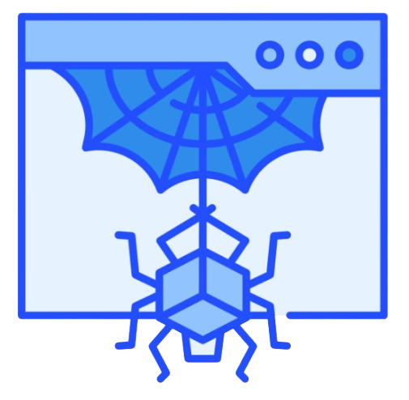

WEB_CRAWLER_&_DEBUG
1. 爬蟲基礎與 HTTP
「網路爬蟲（Web Crawler）」是自動化地從網頁抓取資料的程式。要學爬蟲，先要理解HTTP（HyperText Transfer Protocol）：瀏覽器發送Request給伺服器，伺服器回應Response（包含狀態碼和資料）。常見狀態碼：200（成功）、404（找不到）、403（拒絕存取）、429（請求太頻繁被限速）、503（服務暫時不可用）。
Python最常用的HTTP套件是requests，安裝：pip install requests。基本用法：import requests；r = requests.get('https://example.com')發送GET請求；r.status_code查看狀態碼；r.text取得HTML字串；r.json()直接解析JSON（呼叫API時常用）；r.content取得二進位內容（用於下載圖片、PDF）。
很多網站會檢查「Header」，拒絕明顯是爬蟲的請求：加上User-Agent偽裝成瀏覽器：headers = {'User-Agent': 'Mozilla/5.0 (Windows NT 10.0; Win64; x64) ...'}，然後requests.get(url, headers=headers)。若網站需要登入，用Session保留cookie：session = requests.Session()，先POST登入，之後的請求自動帶cookie。
爬蟲禮節非常重要：在爬之前先看robots.txt（網域/robots.txt），了解哪些路徑禁止爬取；在每次請求之間加time.sleep(1~3)隨機延遲，不要用高頻請求癱瘓對方伺服器；遵守網站的服務條款。未遵守可能導致IP被封鎖，嚴重的有法律風險。
進階：requests.get(url, timeout=10)設定超時（避免卡住等待）；proxies參數使用代理IP（需要時）；遇到重定向時allow_redirects=False可以停在原地；若需要處理HTTPS憑證問題，臨時可用verify=False（正式環境不建議）。
2. HTML 解析：BeautifulSoup
拿到HTML字串後，要用「HTML解析器」從中找到目標資料。Python最常用的是BeautifulSoup4（bs4），安裝：pip install beautifulsoup4 lxml。使用：from bs4 import BeautifulSoup；soup = BeautifulSoup(r.text, 'lxml')，lxml是解析器（速度快）。
用「CSS選擇器」定位元素最直觀（和JS的querySelector一樣）：soup.select('div.card')選所有class含card的div，回傳list；soup.select_one('h1.title')選第一個，回傳單一元素。取得文字內容：.text或.get_text(strip=True)（去除前後空白）。取得屬性值：tag['href']或tag.get('href', '')（取不到時回傳空字串，不報錯）。
也可以用find()和find_all()：soup.find('table', {'class': 'data-table'})；find_all回傳list，find只回傳第一個。巡覽DOM：.parent（父元素）、.children（直接子元素）、.next_sibling（下一個兄弟元素）。
面對「動態網頁」（用JS渲染的內容，requests只能拿到空的HTML骨架），需要用Selenium或Playwright控制真實瀏覽器。Playwright是較新的選擇，安裝：pip install playwright && playwright install，可以讓程式自動點擊、填表、等待JS執行完再取HTML，對付SPA網站（如React、Vue做的網頁）。
爬到的資料通常用pandas整理存檔：把每筆資料存成dict放入list，最後用pd.DataFrame(data_list)轉成DataFrame，再.to_csv('output.csv', index=False, encoding='utf-8-sig')存成CSV（utf-8-sig讓Excel開中文不亂碼）。或存到資料庫：用sqlite3或SQLAlchemy搭配SQLite，持久化儲存爬到的資料。
3. Debug 技巧與工具
「Debug（除錯）」是程式開發最重要的技能之一，遇到問題不慌張、有系統地找出原因才是高手。Python最基本的debug：print()大法——在懷疑有問題的地方印出變數值，確認資料的實際狀況。雖然簡單，但非常有效，別小看它。
更強大的是「Python Debugger（pdb）」，不需要安裝，直接import pdb; pdb.set_trace()（Python 3.7+可以直接寫breakpoint()）在程式裡設斷點，執行到這行時程式暫停，進入互動模式：n（next，執行下一行）、s（step，進入函式內部）、c（continue，繼續執行到下一個斷點）、p 變數名（印出變數值）、q（quit，結束）。
更好用的是VS Code的圖形化debugger：在程式碼行號旁點一下設紅點斷點，按F5啟動debug模式，程式暫停時可以在左側看所有變數的值、在Debug Console即時執行Python指令，比pdb直觀很多。是專業開發者的必備工具。
「例外處理（Exception Handling）」在爬蟲中特別重要，因為網路狀況不穩定，各種錯誤都可能發生：requests.exceptions.Timeout（超時）、requests.exceptions.ConnectionError（連線失敗）、AttributeError（找不到元素，.select_one()回傳None又繼續存取）。用try-except包住可能出錯的部分，記錄錯誤log，程式繼續跑，不要因為單一錯誤讓整個爬蟲崩潰。
logging套件比print更適合生產環境：設定log等級（DEBUG、INFO、WARNING、ERROR）、同時輸出到console和檔案、自動記錄時間戳。爬蟲跑了幾小時後出錯，靠log才能追溯是在哪一筆資料、哪個URL上出問題。
4. 進階爬蟲技術
面對「反爬蟲機制」需要更多技巧：Rate Limiting（請求頻率限制）——用time.sleep(random.uniform(1, 3))隨機延遲模擬人的操作；IP封鎖——使用IP代理池（proxy pool）輪換IP；CAPTCHA（驗證碼）——可以用2captcha等API服務解，或換時段再試；Cloudflare防護——Playwright配合playwright-stealth插件繞過。
大量爬蟲需要「並發與非同步」提升效率：用concurrent.futures.ThreadPoolExecutor多執行緒同時爬多個URL（適合IO密集型任務）；或用aiohttp+asyncio非同步HTTP請求，效能更高；Python的Scrapy框架提供完整的爬蟲基礎建設，包含自動處理速率限制、資料管道、斷點續爬等功能，適合大規模爬蟲專案。
「API逆向工程」是更高效的資料獲取方式：許多網頁表面上看起來沒有API，但其實前端是透過隱藏的API取得資料的。用Chrome開發者工具的Network分頁，過濾XHR/Fetch請求，找到真正傳遞資料的API端點，直接呼叫API回傳JSON，比解析HTML快很多也穩定很多！
資料清洗（Data Cleaning）是爬蟲後的必要步驟：去除HTML標籤（re.sub(r'<.*?>', '', text)）；處理HTML字元實體（html.unescape(text)把&轉回&）；去除多餘空白（re.sub(r'\s+', ' ', text).strip()）；用pandas的.dropna()去除空值、.drop_duplicates()去除重複。
5. 實作專案：資料蒐集與分析
整合所學做一個完整的「資料蒐集與分析」專案！題材推薦：爬取PTT（有提供RSS和公開API）、Yahoo股價歷史資料（yfinance套件更方便）、政府開放資料平台（data.gov.tw，有官方API）、書籍/電商評論（用Selenium）。
流程設計：建立Crawler類別封裝所有爬蟲邏輯（初始化session、get_page()、parse_list()、parse_detail()）；用config.py集中管理所有URL、delay時間、輸出路徑等設定；主程式只負責呼叫Crawler和存檔，保持清晰分離。
進階分析：爬完資料後用pandas計算統計（mean、groupby、value_counts）；用matplotlib或plotly畫圖視覺化；若是文字資料，用jieba（中文分詞）+wordcloud做文字雲；或用sklearn做簡單的情緒分類。
Debug過程中一定會遇到各種問題，把每個bug的排除過程記錄下來，是最好的學習機會！常見坑：網站改版導致選擇器失效（定期檢查）、時區問題（datetime加上tzinfo）、編碼問題（始終用utf-8）、記憶體洩漏（爬大量資料時分批處理、定期釋放）。
最後，把爬蟲腳本包裝成可排程執行的程式：加入argparse讓使用者從命令列傳入參數（如要爬的日期範圍）；設定Linux Cron定期執行；把分析結果自動寄email或推送到LINE Notify。這樣就完成了一個自動化資料蒐集與報告的完整系統！🕷️